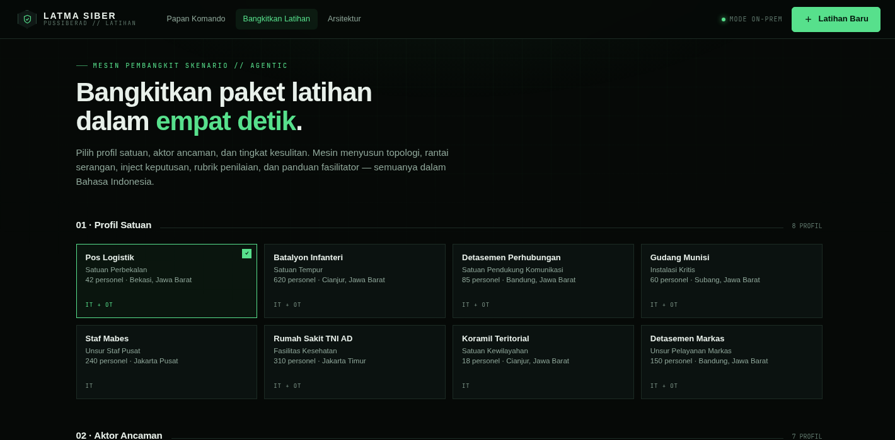
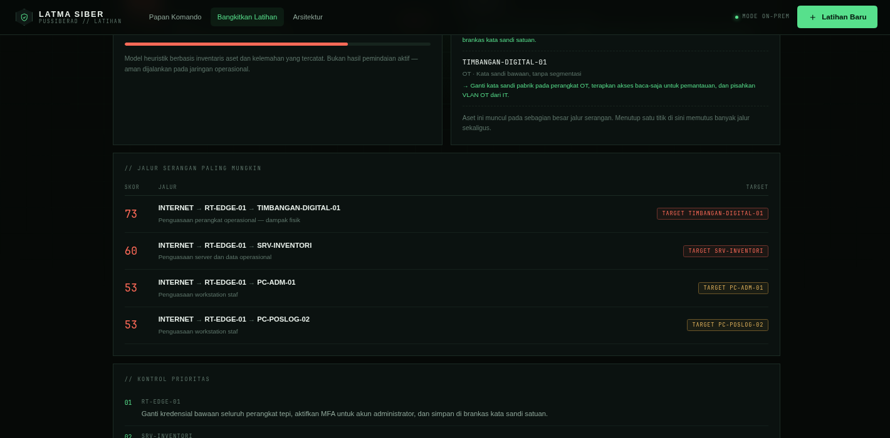
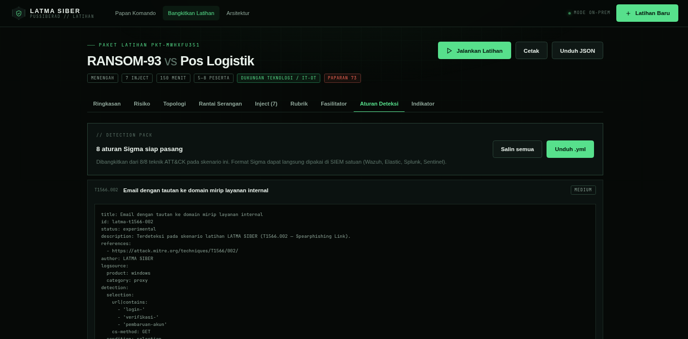
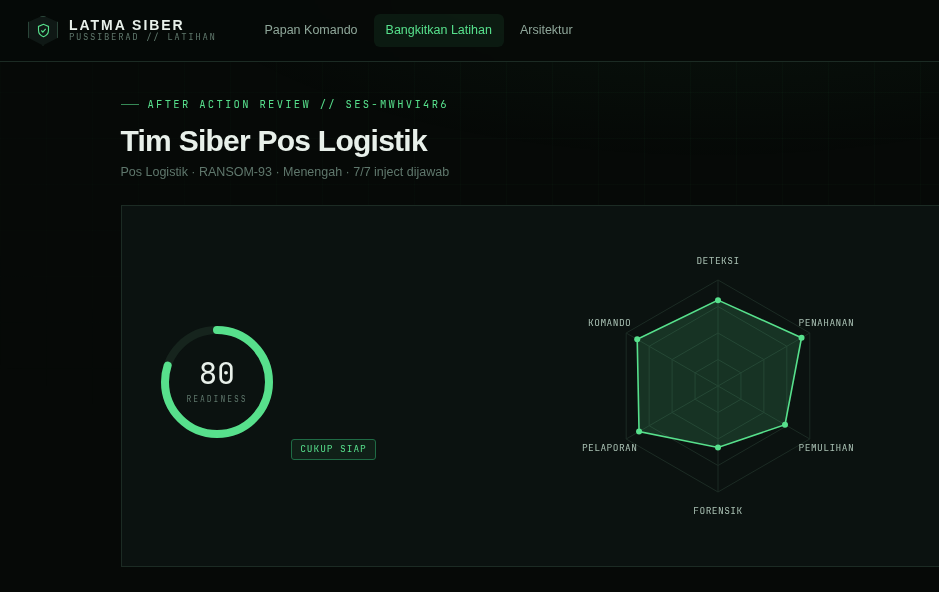

Peta risiko, aturan deteksi, dan kesiapan personel — dihitung dari satu inventaris aset. Berjalan di satu laptop satuan, tanpa internet.
4 detikMembangkitkan satu paket latihan
6Kompetensi dinilai
Rp 0Biaya perangkat tambahan
KATEGORI: DUKUNGAN TEKNOLOGI / IT-OTPURWARUPA: BERJALAN
MASALAH
Konteks
Ancaman sudah terukur. Kesiapan kita belum.
5,2 MAnomali trafik (BSSN, 2025)
93,78%Terkait malware
<10%Trafik nasional terpantau
MASALAH 01
Latihan terlalu mahal
Satu skenario layak butuh 3 hari kerja dan keahlian khusus. Akibatnya latihan jarang dilakukan.
MASALAH 02
Kesiapan tidak terukur
Tanpa penilaian terstruktur, pimpinan tidak punya angka untuk menentukan siapa dilatih apa.
MASALAH 03
Solusi butuh internet
Hampir semua platform latihan berbasis cloud. Di satuan, koneksi terbatas dan data tidak boleh keluar.
LATMA SIBERKARTIKA CYBER HACKATHON 2026
INSIGHT
Pergeseran cara pandang
Semua orang membangun alat perang. Hampir tidak ada yang membangun pabrik prajurit.
PUSSIBERAD sedang membangun kekuatan siber dari nol: jalur Bintara Siber, satuan baru, personel baru. Kebutuhan pertamanya bukan firewall tambahan — tapi cara mencetak operator yang terukur, sekaligus meninggalkan pertahanan nyata di setiap latihan.
LATMA SIBERKARTIKA CYBER HACKATHON 2026
SOLUSI
Bukan kursus. Tiga keluaran operasional.
Satu inventaris aset menghasilkan peta risiko, aturan deteksi, dan angka kesiapan.
KELUARAN 01
Peta Risiko
Indeks paparan 0–100, jalur serangan paling mungkin menuju aset kritis, titik kritis yang memutus banyak jalur, dan kontrol prioritas per aset.
KELUARAN 02
Detection Pack
Aturan Sigma siap pasang di SIEM satuan, dibangkitkan dari teknik ATT&CK pada skenario. Latihan meninggalkan pertahanan, bukan cuma nilai.
KELUARAN 03
Indeks Kesiapan
Enam kompetensi per personel, dirangkum menjadi risiko bersih satuan: paparan teknis dikali kesiapan manusia.
LANGKAH 1
Pilih
8 profil satuan × 7 aktor ancaman × 3 tingkat
LANGKAH 2
Bangkitkan
Paket lengkap dalam ± 4 detik
LANGKAH 3
Uji
7–9 inject keputusan, 90–240 menit
LANGKAH 4
Tutup
Kontrol prioritas + aturan deteksi
LATMA SIBERKARTIKA CYBER HACKATHON 2026
PURWARUPA
Mesin pembangkit
Tiga pilihan. Empat detik. Satu paket latihan lengkap.

LATMA SIBERKARTIKA CYBER HACKATHON 2026
PETA RISIKO
Dari inventaris ke jalur serangan
Empat jalur. Semua berakhir di aset yang tidak boleh jatuh.

LATMA SIBERKARTIKA CYBER HACKATHON 2026
DETECTION PACK
Latihan yang meninggalkan pertahanan
Setiap skenario menghasilkan aturan deteksi siap pasang.

LATMA SIBERKARTIKA CYBER HACKATHON 2026
PURWARUPA
Hasil yang bisa dipertanggungjawabkan
Bukan nilai kosong. Profil kompetensi yang bisa dibaca.

CONTOH SESI
Penahanan 91 · Komando 88
Kuat di isolasi dan pengambilan keputusan.
TITIK LEMAH
Forensik 58 · Pemulihan 73
Barang bukti tidak diamankan; pemulihan bergantung cadangan yang sudah tercemar.
TINDAK LANJUT
Latihan terarah, 30 hari
Modul forensik dasar dan uji pemulihan dari cadangan offline.
LATMA SIBERKARTIKA CYBER HACKATHON 2026
ARSITEKTUR
Satu perangkat, tiga lapis
Dibangun untuk satuan, bukan untuk pusat data.
INPUT
Profil satuanAset, personel, paparan, kelemahanAktor ancamanRansomware, APT, insider, rantai pasok, operasi informasi, media lepas, DDoS
MESIN PEMBANGKIT
Pipeline deterministikTopologi · rantai serangan · inject · rubrik · panduan fasilitatorDapat diauditKeluaran sama untuk input sama — bukan kotak hitam
PELAKSANA
Mode tabletopTanpa jaringan, tanpa perangkat tambahanMode labDocker terisolasi, satu host
Runner lab Docker, tanda tangan kriptografis paket, sinkronisasi manual antar-satuan, modul OT mendalam.
LATMA SIBERKARTIKA CYBER HACKATHON 2026
PENUTUP
Satu kalimat
Pertahanan siber tidak kekurangan alat. Ia kekurangan prajurit terlatih.
LATMA SIBER mencetak dan mengukur prajurit itu — di satu laptop, tanpa internet, mulai minggu depan.
8Profil satuan
7Aktor ancaman
7Teknik ATT&CK per skenario
0Ketergantungan cloud
LATMA SIBER · KARTIKA CYBER HACKATHON 2026PURWARUPA DAPAT DIAKSES